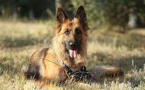

Los perros pitbull, con su enorme sonrisa, son expertos en robar corazones. Aunque son increíblemente protectores con sus personas favoritas, también son bastante cariñosos. Además, a los cachorros pitbull les encanta jugar sin parar e interactuar tanto con niños como con adultos.
Pastor Aleman
El pastor alemán u ovejero (en alemán: Deutscher Schäferhund) es una raza canina que proviene de Alemania.1La raza es relativamente nueva, ya que su origen se remonta a 1899.2 Forman parte del grupo de pastoreo, ya que fueron perros desarrollados originalmente para reunir y vigilar ovejas. Desde entonces, sin embargo, gracias a su fuerza, inteligencia,3 capacidad de entrenamiento y obediencia,3 los pastores alemanes de todo el mundo son a menudo la raza preferida para muchos otros tipos de trabajo, como son: perro policía, perro guardián, guía de ciegos, animal de rescate, y otros, según el uso que le den las fuerzas y cuerpos de seguridad y el ejército. En muchos países incluso cuentan con unidades específicas denominadas
Otras Razas